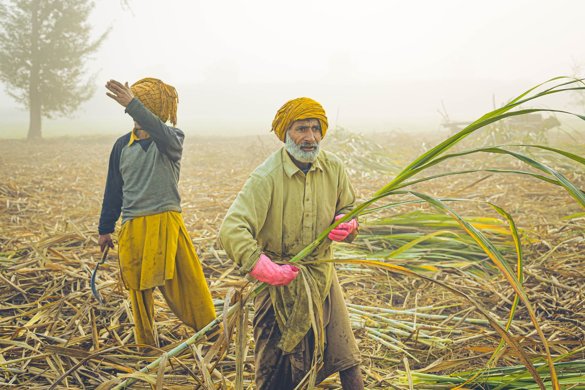
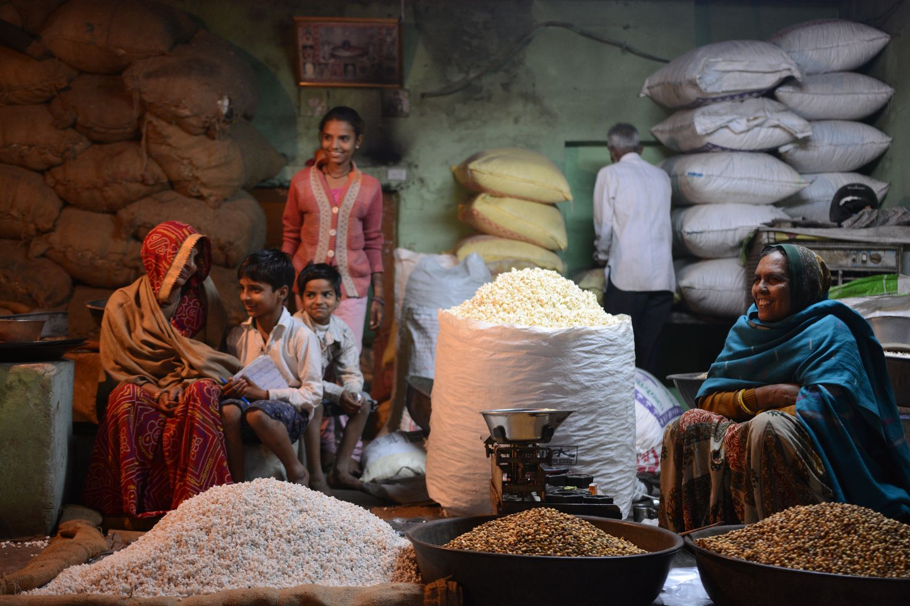
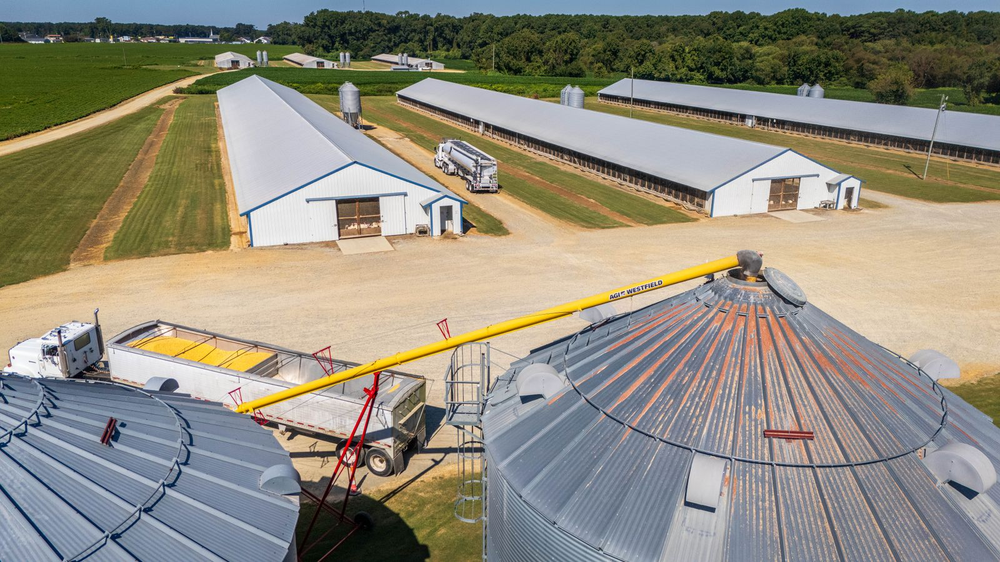

Four integrated product suites designed for PACS, mandis, cooperative banks, and the rural credit workflow — built offline-first for real-world connectivity.
A localized, offline-first enterprise solution for Primary Agricultural Credit Societies. Covers the full operational lifecycle from membership to accounting, with seamless synchronization to core banking systems when connectivity is available.

Automated Kisan Credit Card workflows that streamline the entire origination process. From e-KYC verification to land record integration and cooperative bank workflow, eKCC reduces manual steps and connects directly to banking systems.
Comprehensive digital infrastructure for APMC mandis. Covers the full mandi transaction lifecycle from gate entry to settlement, integrating e-auctions, weighbridge data, warehouse receipts, and digital payments.

e-gate registration with farmer and lot verification.
Digital bidding with transparent price discovery.
Automated weight capture with integrated invoicing.

Centralized payment reconciliation and analytics layer for the cooperative ecosystem. Connects mandi payments, insurance integration, and market intelligence with logistics matchmaking to provide end-to-end visibility.
Register your organization to explore how AgriCoop's product suites can support your digital transformation.